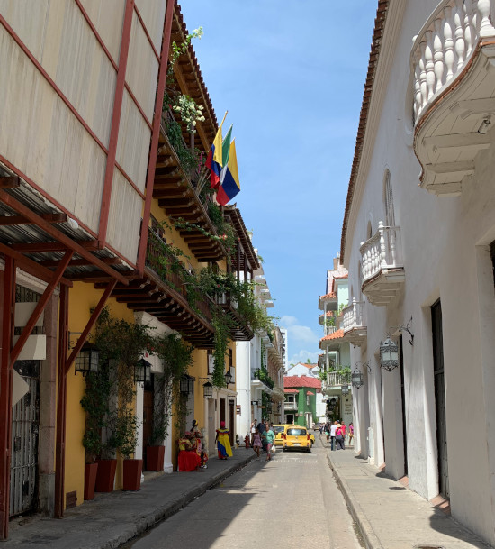

Sights
Things to do

Make sure to check out:
- Explore the Walled City
- Check out the beaches
- Try the restaurants and street food
- Dance your heart out
There is much to do and see in Cartagena. You can spend days bumming on the beach, evenings dining in the walled city, and nights sweating on the dance floor. With so much to do from sunrise to sunset you won't have time to do it all.
Beaches to check out:
Cartagena's beaches provide some amazing sunset views. From a 5min boat ride from the Walled City to a 40min taxi ride, the following beaches are worth checking out.
- Punta Arena Beach
- Playa Blanca in Baru
- Manzanillo Del Mar
- Castillogrande Beach
- La Boquilla